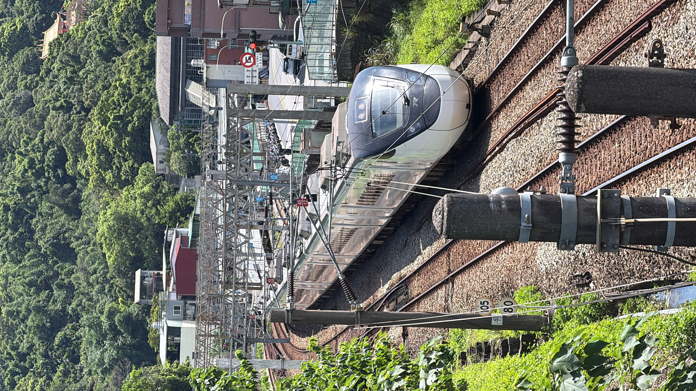
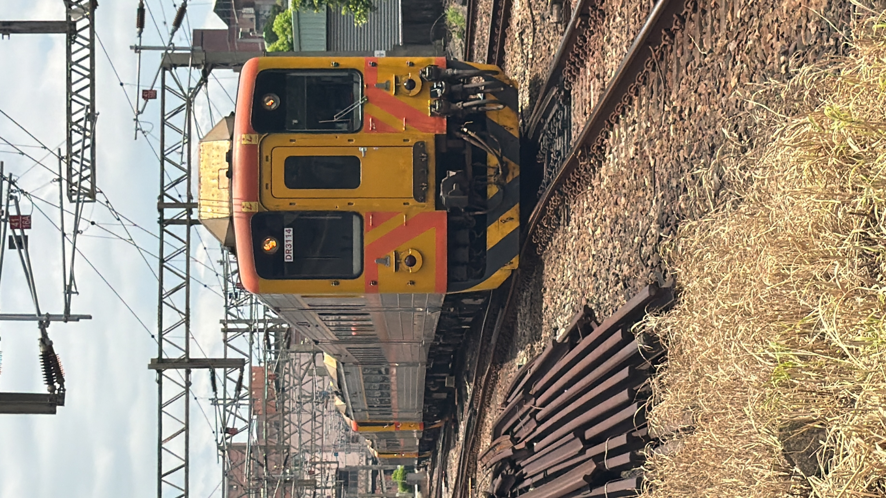
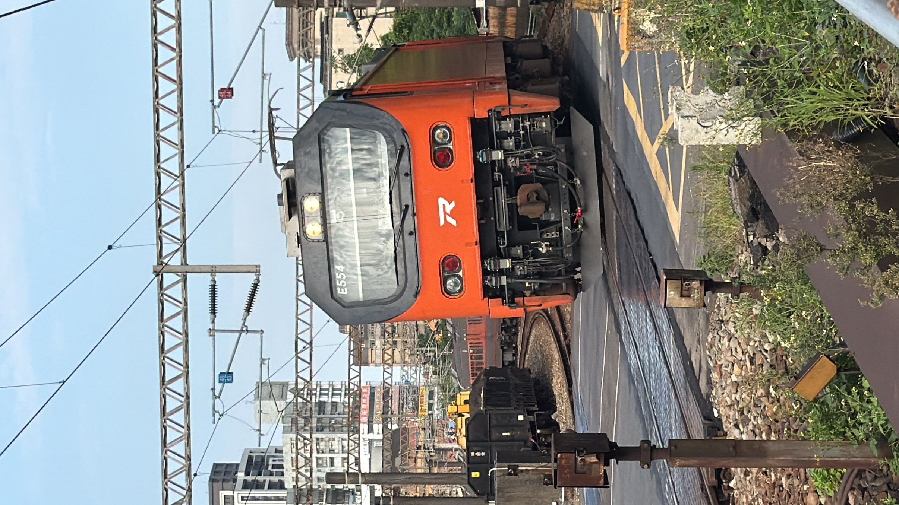
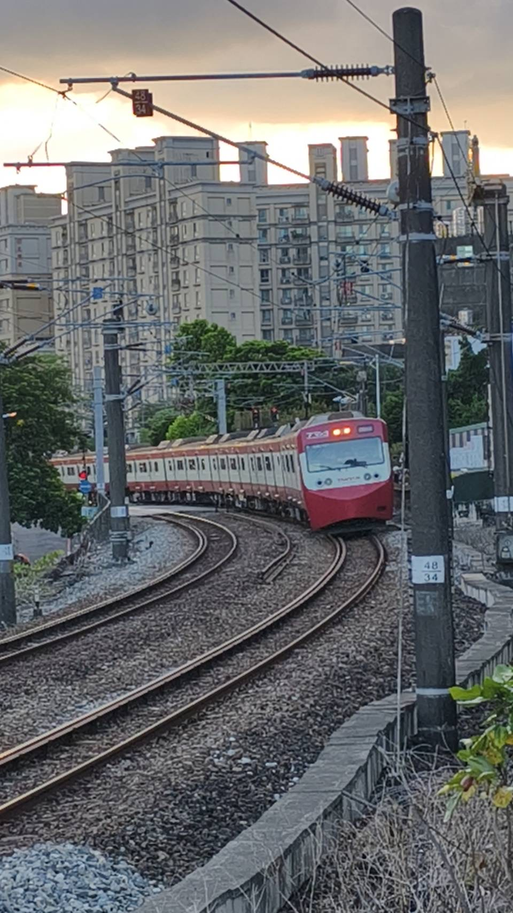
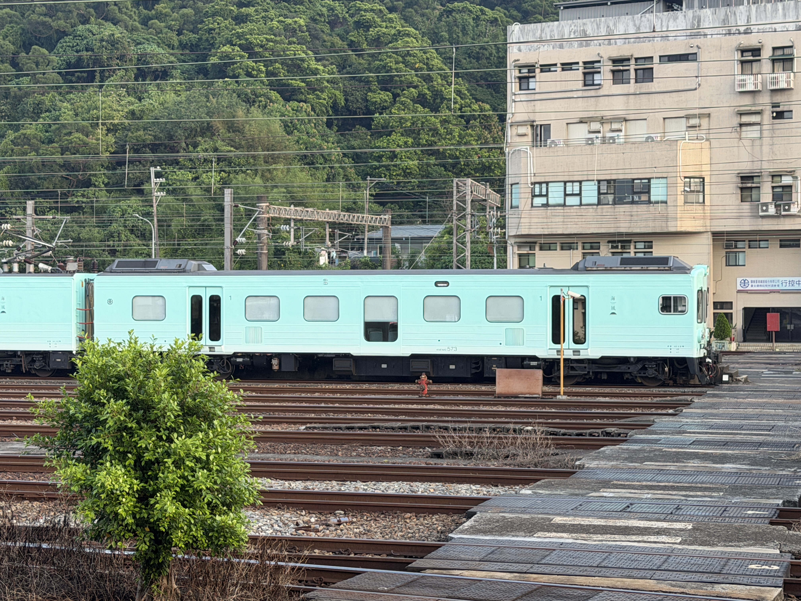
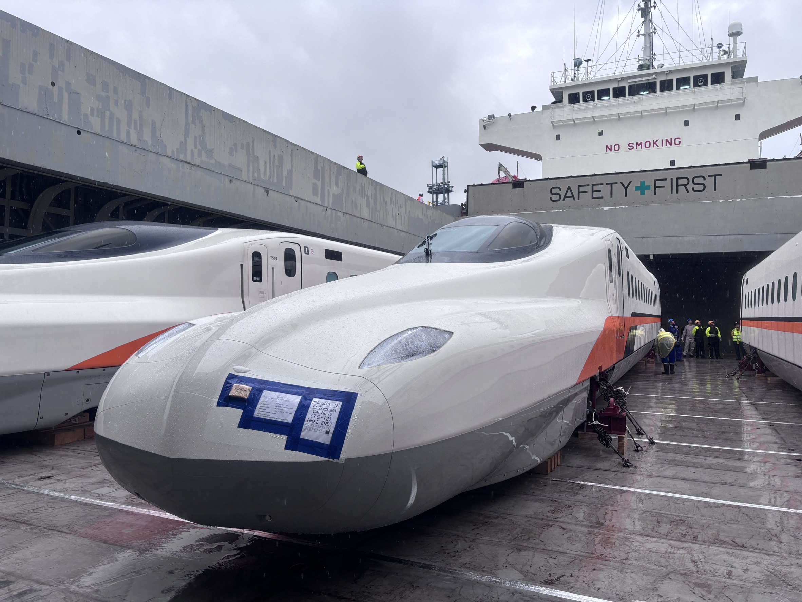
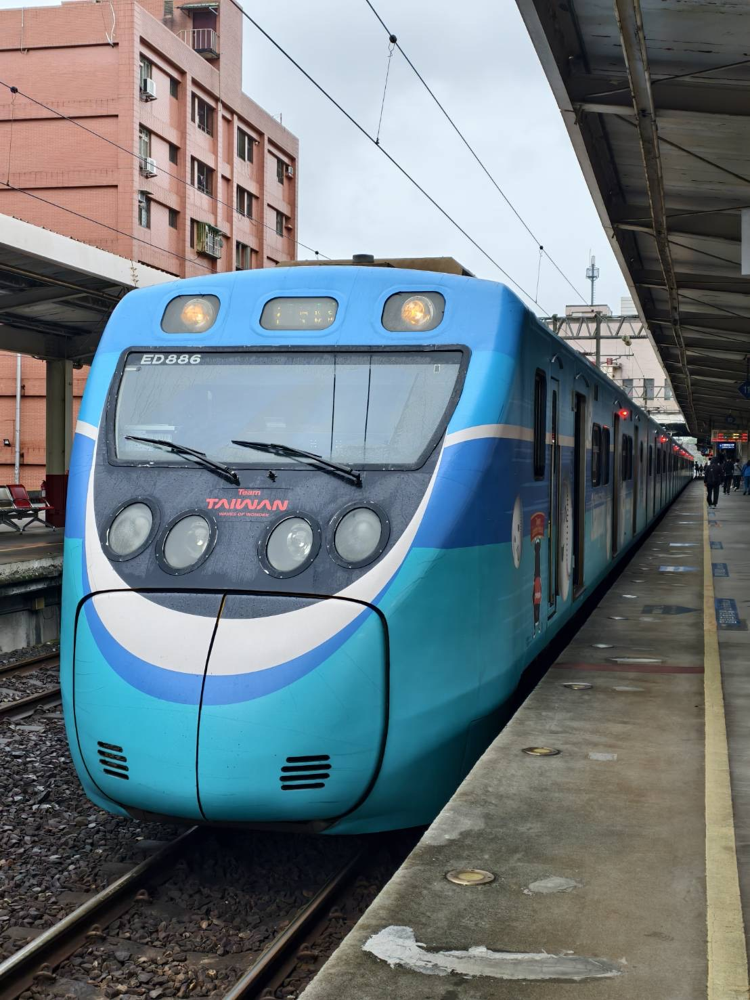
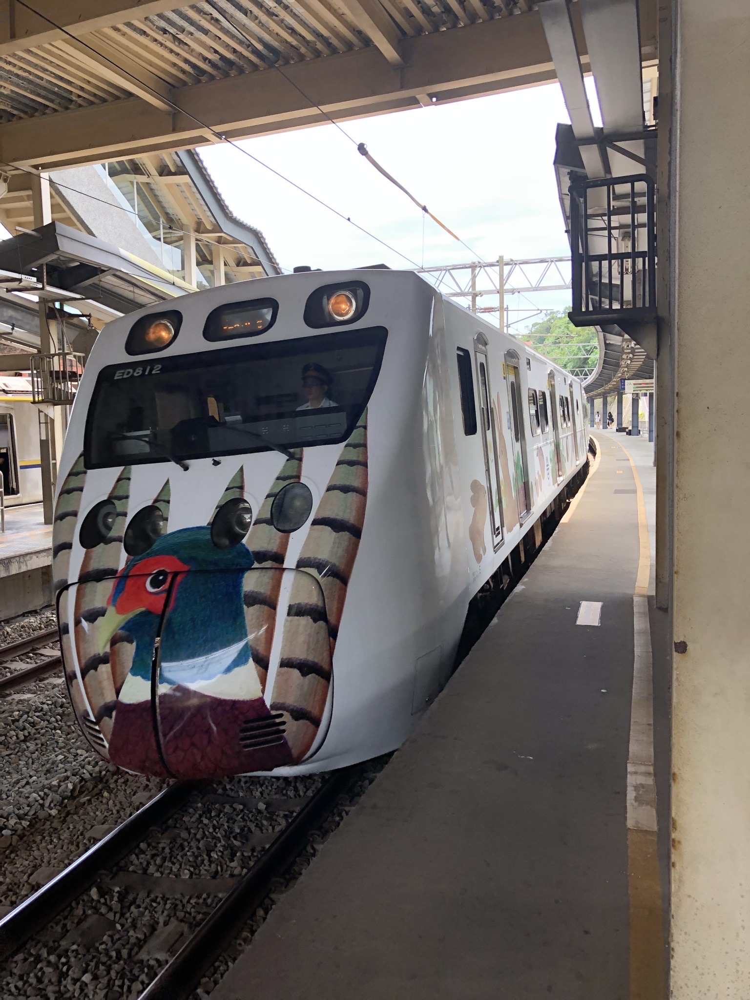
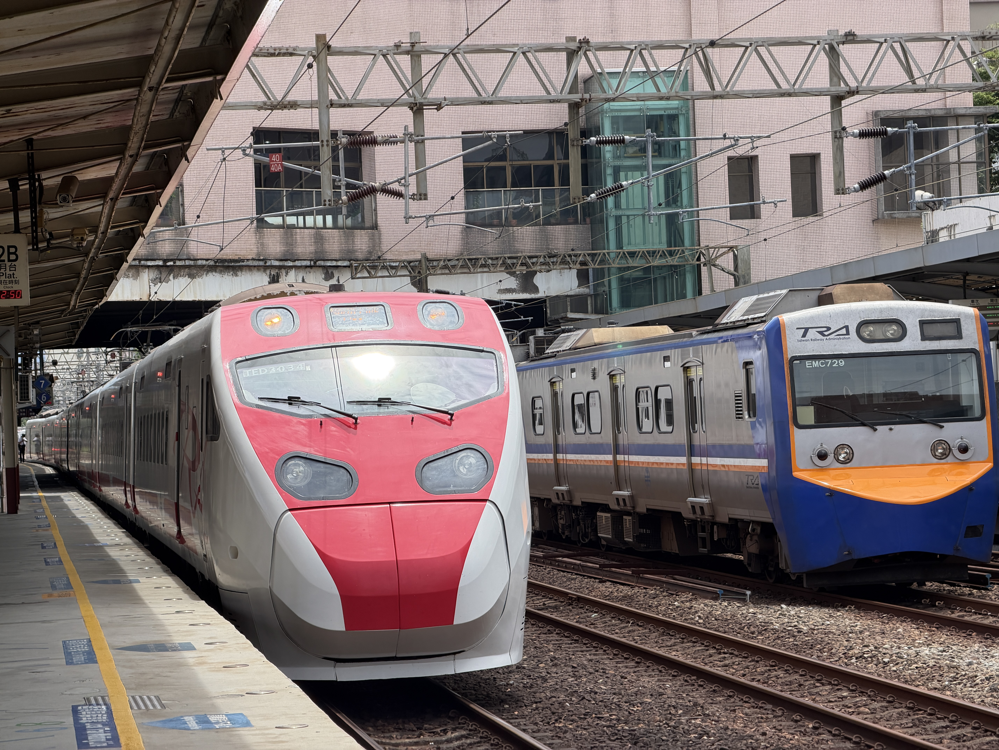

台灣鐵道攝影作品
收錄 Michael 拍攝的台灣鐵路、列車、車站、彩繪列車與鐵道風景。（共 12 張）

群車交會
不同世代的列車同框，呈現鐵道場站繁忙而難得的瞬間。

軍運列車紀錄
新型柴電機車牽引軍用裝備列車，留下罕見的鐵道運輸畫面。

太魯閣號出隧道
太魯閣號沿著山林間的彎道駛出隧道，展現傾斜式列車的動態感。

EMU3000 山林彎道
EMU3000型城際列車沿著山林與鄉鎮間的彎道前進，展現流線車頭與鐵道景觀。

DR3100 柴聯車
DR3114領銜的柴聯車穿越交錯軌道，記錄台鐵柴聯車經典的黃色與橘色塗裝。

E554 電力機車
橘色E500型電力機車E554穿越場站軌道，展現台鐵新世代電力機車的鮮明外觀。

嗶嗶嗶嗶台灣號
交通部觀光署與臺鐵合作，復刻日本京急電鐵特色塗裝，展現台日鐵道交流風貌。

海風號
海風號以清新的海洋色彩亮相，薄荷綠車身呈現悠閒而獨特的觀光列車風格。

台灣高鐵全新 N700ST 抵臺
台灣高鐵新世代N700ST列車搭乘運輸船抵達臺灣，留下新車在船上準備卸載的珍貴紀錄。

EMU800型 Team Taiwan彩繪列車
臺鐵EMU800型列車披上Team Taiwan彩繪，展現臺灣隊的活力。

EMU800型環頸雉彩繪列車
以臺灣環頸雉為主題的彩繪列車，呈現臺灣自然生態之美。

普悠瑪號與EMU700型列車交會
紅白色普悠瑪號與EMU700型通勤電聯車在車站並列交會。